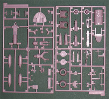
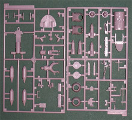
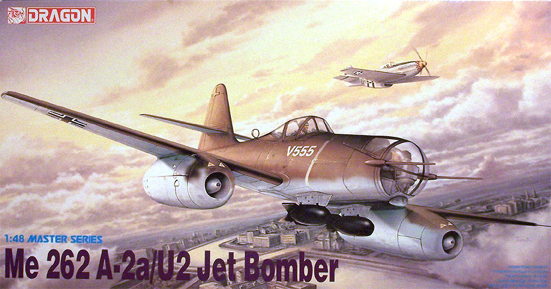
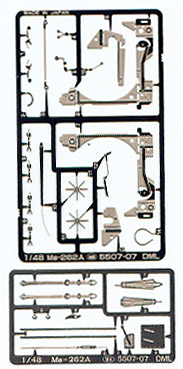
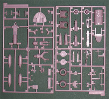
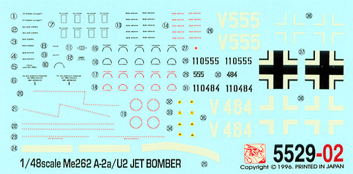

{kind=link}
 

{kind=link}

You may click on the above images to view larger pictures
Dragon Models Limited Me262A-2a/U4 Jet Bomber

Kit #5529 Collector’s Market Value $30.00
Images and text Copyright © 2005 by Matt Swan
Developmental Background
By this time most of us are familiar with Willie Messerschmitt’s incredible (for its day) 262 Stormbird. I am not going to spend time rehashing the whole development of the aircraft but lets talk a little bit about the various modifications, in particular the 262A-2a/U2. Designed as a bomber interceptor the original 262A concept was exceptional in its function. Hitler’s demands for a jet bomber really handicapped the aircraft. Not having any bombsight mechanism results were less than optimal.
Messerschmitt was really smart about the design of the 262 in that the metal nose section was removable. This allowed for various armament configurations to be plugged into the nose like the 262A-1a/U4 with its 50mm cannon or the 262B-1a/U4 with a radar and cannon selection. A few Me-262A-1a/U1s featured two MK-108 low-velocity 30 millimeter cannon, two MK-103 high-velocity 30 millimeter cannon, and a pair of MG-151/20 20 millimeter cannon or the Me-262A-1a/U3 with no armament or the Me-262A-5a with two MK-108 30 millimeter cannon. Note that the Ux designates a nose configuration. With all this said, in an effort to resolve the poor bombing performance the metal nose section was removed from two airframes (V484 and V555) and replaced with a plywood and persiplex nose section providing for a prone position bombardier and a gyro-stabilized Lofte 7H bombsight.
There is not a tremendous amount of documentation of this conversion but I’ve found a couple of photos of the V555 unit undergoing an engine replacement and one after a gear up landing. How did this modification perform? It’s hard to say as the war ended shortly afterward but it certainly is an interesting looking modification and for the guy lying up front it must have been a hell of a ride.
The Kit
If you are a fan of the Messerschmitt 262 then you really should have a good appreciation for Tri Master Models. This model is actually an old Tri Master mold purchased by DML. The original kit included white metal landing gear and detail pieces, which DML substituted with plastic. Even by todays standards this is an exceptional kit, imagine in 1970 when the state of the art was Revell with their raised panel lines and barely adequate decals you open a Tri master box. There would be no doubt in your mind that you were holding the future of the modeling industry.

First let’s take a look at the basic packaging. The model comes in a standard light duty cardboard box with removable top and eye-catching artwork. Inside the box each of five trees of parts are contained in its own poly bag to prevent shipping abrasion. There are two sprues of clear parts, each with its individual bag and again, separate bags with the two sprues of photo-etched parts.
The photo etched parts seen to the right cover the main gear bay interior structure, seatbelts and various control levers. The metal is solid and etched along each fold line. Most of these are the same pieces as found in the 262A a1/U4 model with the 50mm cannon. I’ve built this one already and can attest to the fact that the PE parts fit into the bays very well. The two trees of clear parts are finely cast pieces displaying good clarity and nicely raised frame lines. The clear parts cover the canopy sections for the pilot and bombardier as well as various marker lights and lenses. The clear parts are thin and are equal to or better than most clear parts found in kits manufactured today and allow for the cockpit to be built open or closed.
Looking at the primary pieces of the model we have five trees of parts molded in light gray polystyrene. Some of the pieces show a very fine level of flash and mold separation lines but overall are fairly clean. All of the plastic pieces display fine, crisp engraved panel lines. Overall exterior detail is very good. The kit includes a pilot figure and a bombardier and the bombardier’s compartment features a hinged access door. The rudder is featured as a separate surface but the flaps, elevators, ailerons and leading edge flaps are molded in place. All of the larger pieces such as wings and fuselage fit together very well during a dry fit session and it looks like little or no filler would be needed.
The last parts item to be discussed are the tires. These are included as vinyl tires and this is not a good thing. There are two basic types of vinyl tires that show up in some kits, one type is known for eating the plastic while the other is not. These tires are of the variety that DOES NOT eat the plastic but they will dry out after a few years on the shelf resulting in the material splitting and cracking. So either way these tires should be replaced unless you are planning on this model being in your collection for only a short time.
In the final inventory we have 31 PE parts, two of which will not be used, 13 clear parts, 122 gray high pressure injection molded pieces and three vinyl tires for a grand total of 169 pieces in the box.

You may click on the above images to view larger pictures
Decals and Instructions

The instruction packet begins with a brief historical background of the aircraft done in three languages followed by a fairly complete color reference chart listing paints by name and by paint code for Gunze Aqueous, Gunze Mr. Color and Italeri. From here we get twenty exploded view construction steps that are full of color call-outs, PE bending and placement instructions and variation construction options for V484 or V555. Scattered through these steps are close-up views and alternate view angles to aid with assembly. A single panel is reserved for exterior painting and marking but it only covers V555; I guess there is no difference in scheme between the two aircraft other than the unit number. The very last panel contains a parts map.
Since all photographic documentation of these aircraft is in black and white there appears to be doubt whether the warning and service stencils were done in black or red but Dragon has both bases covered – many of the stencils are provided in both colors. This is nice because either way you will end up with extras for the spares box. As with all Luftwaffe models coming out of the European community this kit does not include any Swastikas. Print registry looks to be right on the dot and color density looks good. The decals are thin, behave properly and hunker down nicely with an application of setting solution.
Conclusions
This is a very well engineered kit of a unique variation of the Me-262. The parts all fit together very well. The level of detail provided in the kit is bordering on exceptional. The inclusion of PE parts really helps make the kit a winner. The instructions are very clear and helpful. The decals, while lacking the Swastikas, are very good and comprehensive. Even with all this it is not perfect. One thing that I would feel is mandatory for this kit is the replacement of the vinyl tires with an aftermarket set such as True Details. The vinyl tires may look cool when you put them on but you will most definitely regret it down the road. The next thing that I would suggest would be the addition of separate landing flaps and leading edge flaps. These are available from Aires and Cutting Edge. The control surface could be upgraded with separate resin parts also. If you really wanted to go nuts you could add the incredible Jumo 004 engine kit from Aires. There are lots of other aftermarket goodies out there aimed at the 262 series in general and many of them could be adapted to this for additional detail.
All in all this is just a really nice kit and you would be remiss by not having one in your World War 2 collection. I give it a very good recommendation.